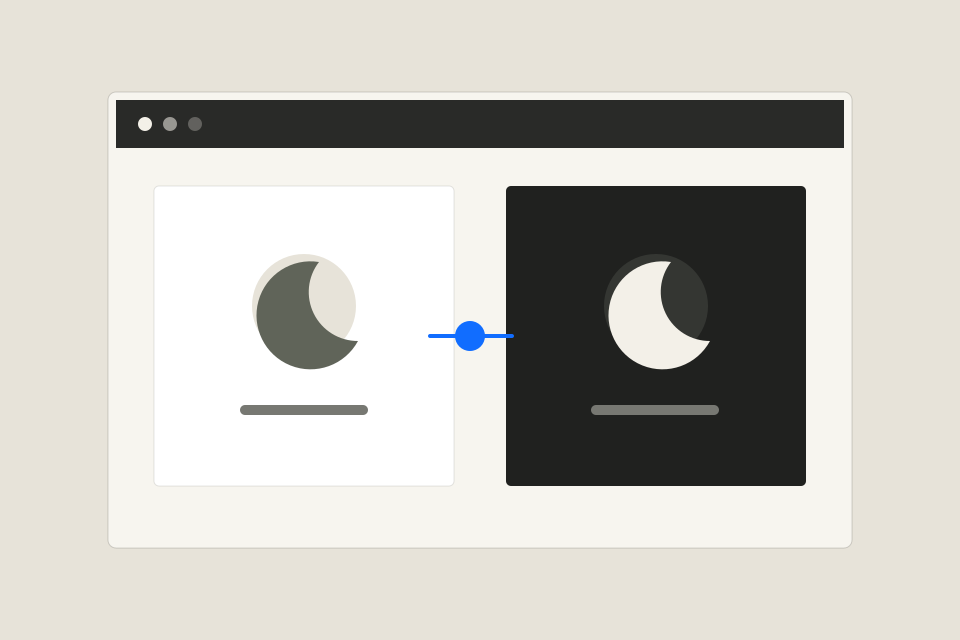

Desarrollo web · 24 ago 2025 · Erick Rios
Proyecto Modo Oscuro Dinámico: Dale Vida a Tu Sitio con JavaScript y CSS
Una práctica de interfaz para alternar entre temas con estilos CSS y acciones en JavaScript.

Sobre esta publicación
Una práctica de interfaz para alternar entre temas con estilos CSS y acciones en JavaScript.
Esta ficha reúne el título, la fecha y la descripción publicados por STEAM Academy. El desarrollo completo, los pasos y los recursos se consultan en el artículo original.
Leer publicación completa en STEAM Academy